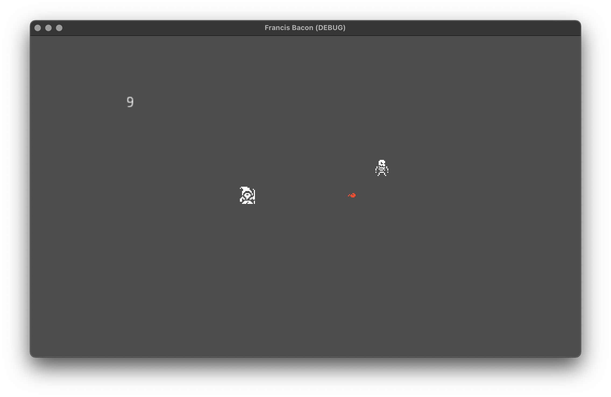
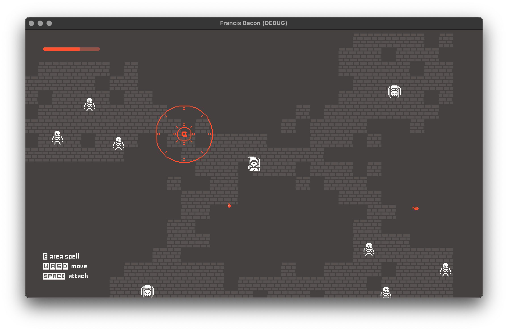

For as long as I’ve been playing games I’ve wanted to make one. A couple times a year I’ll open up Unity or Godot and try to put something together, and usually bounce off within a week. With the exception of The Cave of Dolmenlore (which was never meant as a serious attempt), I’ve never finished a project.
The reason is, more often than not, that I’ve come up with either a story or an artstyle, rather than anything mechanical. It’s not that you can’t start a game with either of those things, but it’s difficult to make something enjoyable without some degree of iteration. Even the most enlightened vision of the final product is too reductive to realise the entire, complex project.
This weekend, though, I had a little idea for a mechanic, and I’d like to see where it goes. No commitment to story or setting or visuals yet — just some testing and iteration, and hopefully it ends up being fun.
Health is Mana. France is Bacon.
The simplest form I imagined is this: you play as some kind of mage in some kind of dungeon, in which your hit points and mana points are one and the same. To cast a spell, you must sacrifice your own health — but when you slay a foe, you’ll get it back (and more).
I can see two immediate issues here:
- There’s a negative feedback loop. If you’re being overwhelmed by enemies, you can’t fight back without first making the situation worse. Which means:
- This mechanic incentivises defensive play. I’m not sure I want that — it could be fun, but more likely it’ll be slow and unengaging.
The solution to 2 could be as simple as having your health permanently tick down outside of combat, forcing you to keep progressing. But that doesn’t exactly solve the first problem.
Nevertheless, I put together a quick demo using some 1-bit sprites made in Figma (which is categorically not the right tool for the job, but it was already open).

In the first test, I had an enemy (a skeleton) which chases the player (a wizard) and attacks them while in melee range. The player can fire a projectile which costs 1 HP and kills the skeleton, which in turn restores 2 HP.
In the second, I bumped the player HP up to 100, the projectile cost up to 10, and the health gained from the skeleton down to 15 — in essence, while you could previously miss one shot per skeleton and be fine, now you need to hit two out of every three.
This was fine, but not exactly interesting. The mechanic becomes essentially about dodging and aiming. So in the third test, I changed it up once more: I added a new enemy, the spider, which takes multiple hits to kill but drops more HP, and I also added an area-of-effect spell which can damage multiple enemies at once.

The AOE spell has a higher HP cost than the projectile, but a lower damage — so while it can take out a whole group of skeletons at once, killing a spider with it costs more HP than the spider drops. This absolutely made things more interesting: now as well as aiming and dodging, you’re rewarded for picking the right tool for each enemy type, and for kiting skeletons into groups.
But the negative feedback loop is still very much present, and it has teeth: if your health is too low, you can’t fight, and therefore you can’t regain HP.
Where now?
I think the concept still has legs, but it needs watering down and balancing out (to butcher a metaphor). I want to try adding a floor to the feedback loop — some base level of attack that doesn’t cost HP but isn’t as good as the others. High risk, high reward, but optional: maybe the enemies will drop extra loot if you hit them with spells, but they can theoretically be taken down with just a sword. Some ranged enemies could also be useful in getting the player more engaged in combat, rather than the current kite battle.
This iterative approach is already proving more useful than my typical start-with-the-story model — if I keep going with the project, I’ll post more of these development updates whenever I get the chance.